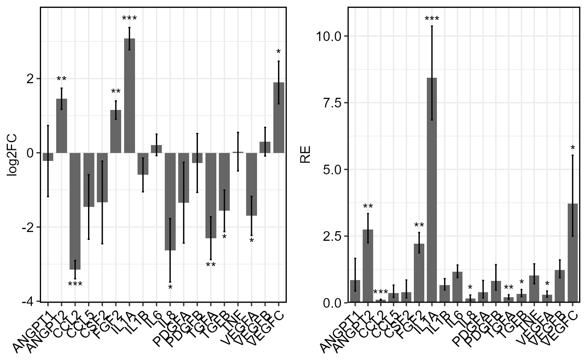
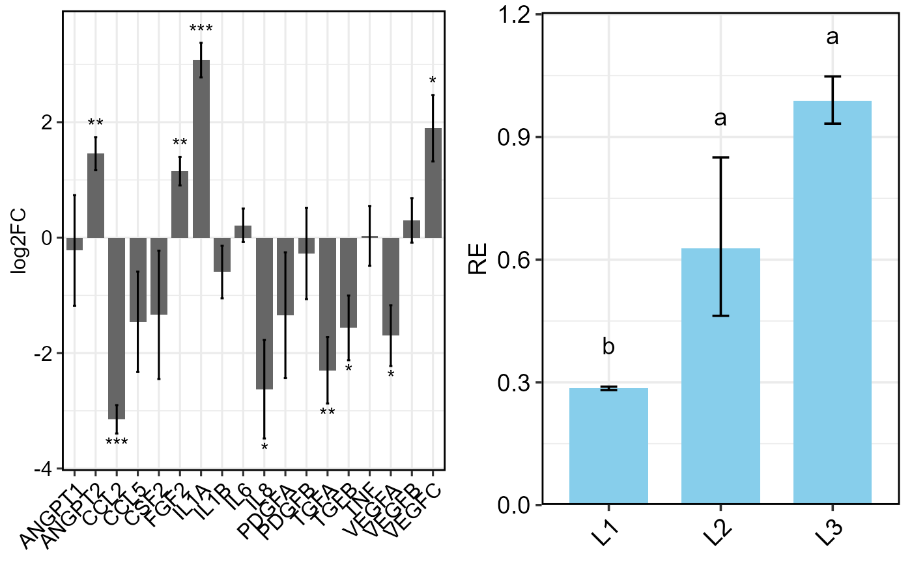

The multiplot function arranges multiple ggplot2 objects
into a single plotting layout with a specified number of columns.
Details
Multiple ggplot2 objects can be provided either as separate
arguments via ....
The function uses the grid package to control the layout.
Author
Pedro J. (adapted from https://gist.github.com/pedroj/ffe89c67282f82c1813d)
Examples
# Example using output from TTEST_DDCt
data1 <- read.csv(system.file("extdata", "data_1factor_one_ref.csv", package = "rtpcr"))
a <- TTEST_DDCt(
data1,
numberOfrefGenes = 1,
plotType = "log2FC")
#> *** 3 target(s) using 1 reference gene(s) was analysed!
#> *** The control level was used as calibrator.
p1 <- a$plot
# Example using output from ANOVA_DCt
data2 <- read.csv(system.file("extdata", "data_1factor.csv", package = "rtpcr"))
out2 <- ANOVA_DCt(
data2,
numOfFactors = 1,
numberOfrefGenes = 1,
block = NULL)
#> Analysis of Variance Table
#>
#> Response: wDCt
#> Df Sum Sq Mean Sq F value Pr(>F)
#> T 2 4.9393 2.46963 12.345 0.007473 **
#> Residuals 6 1.2003 0.20006
#> ---
#> Signif. codes: 0 '***' 0.001 '**' 0.01 '*' 0.05 '.' 0.1 ' ' 1
#>
#> Relative expression (DCt method)
#> SA RE log2FC LCL UCL se Lower.se.RE Upper.se.RE
#> 1 L3 0.9885 -0.0167 1.5318 0.6379 0.0841 0.9325 1.0479
#> 2 L2 0.6271 -0.6733 0.9717 0.4047 0.4388 0.4626 0.8500
#> 3 L1 0.2852 -1.8100 0.4419 0.1840 0.0208 0.2811 0.2893
#> Lower.se.log2FC Upper.se.log2FC sig
#> 1 -0.0177 -0.0157 a
#> 2 -0.9127 -0.4968 a
#> 3 -1.8363 -1.7841 b
#>
#> Combined Expression Table (all genes)
#> gene SA RE log2FC LCL UCL se Lower.se.RE Upper.se.RE
#> 1 PO L3 0.9885 -0.0167 1.5318 0.6379 0.0841 0.9325 1.0479
#> 2 PO L2 0.6271 -0.6733 0.9717 0.4047 0.4388 0.4626 0.8500
#> 3 PO L1 0.2852 -1.8100 0.4419 0.1840 0.0208 0.2811 0.2893
#> Lower.se.log2FC Upper.se.log2FC sig
#> 1 -0.0177 -0.0157 a
#> 2 -0.9127 -0.4968 a
#> 3 -1.8363 -1.7841 b
df <- out2$combinedResults
p2 <- plotFactor(
df,
x_col = "SA",
y_col = "RE",
Lower.se_col = "Lower.se.RE",
Upper.se_col = "Upper.se.RE",
letters_col = "sig",
letters_d = 0.1,
col_width = 0.7,
err_width = 0.15,
fill_colors = "skyblue",
alpha = 1,
base_size = 16)
# Combine plots into a single layout
multiplot(p1, p2, cols = 2)

multiplot(p1, p2, cols = 1)
